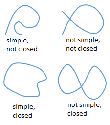

Fundamental Theorem
Before we get to the fundamental theorem over vector fields, we need to look at conservative vector fields a bit more. On a previous page, we said a vector field \(\vec{F}\) is conservative if there exists a potential function \(f\) such that \(\vec{F} = \nabla f\). So for a given vector field \(\vec{F}\), how do we (1) determine if \(\vec{F}\) is conservative, and (2) if it is conservative, how do we determine the potential function \(f\)?
In order to answer these questions, we first need to define a few terms describing the types of curves and regions that we could find in the \(xy\)-plane.
| Definition | Illustration |
|---|---|
|
A curve is simple if it does not cross or intersect itself. A curve is closed if its ending point and starting point are the same. |
 |
|
A region is connected if it is a single region, even though it may contain holes. A region is simply-connected if it does not have any holes or gaps. A region is open if it doesn't constain any of its boundary points. |
So how do we determine if a vector field \(\vec{F}\) is conservative? Well, recall that the gradient of a function is the first partial derivatives of the functon, i.e. \(\vec{F} = \nabla f = \langle f_x,f_y \rangle\), and that the mixed second partial derivatives will be equal if \(f\) is continuous, i.e. \(f_{xy} = f_{yx}\).
Testing for Conservative: For a given vector field \(\vec{F} = \langle P,Q \rangle\) over an open simply-connect region \(D\) in the \(xy\)-plane where \(P\) and \(Q\) both have continuous first-order partial derivatives, \(\vec{F}\) is conservative if for all points in \(D\) the following relationship holds.
\[\frac{\partial P}{\partial y} = \frac{\partial Q}{\partial x}\]Once we determine that a vector field is conservative, how do we find the potential function? Well, from the above theorem, if \(\vec{F} = \langle P,Q \rangle\) then we know \(P = f_x\) and \(Q = f_y\) since \(\vec{F}\) is a gradient field. Then \(f\) is the potential function and we can determine \(f\) by integrating \(P\) and \(Q\) with respect to \(x\) and \(y\), respectively.
FTC & Line Integrals
Recall the fundamental theorem of calculus from Calculus I, which says the definite integral of a continuous function could be determined by \[\int_{a}^{b}\,f(x)~dx = F(b)-F(a)\] where \(F' = f\). We can extend this idea to evaluting line integrals.
FTC for Line Integrals: Given a smooth curve \(C\) parameterized by the vector functon \(\vec{r}(t)\) for \(a \le t \le b\) and a differentiable function \(f\) whose gradient \(\nabla f\) is continuous on \(C\), the line integral of \(\nabla f\) over \(C\) can be computed using only the endpoints.
\[\underset{C}{\mathop \int}\,\nabla f \cdot ~d\vec{r} =f(\vec{r}(b))-f(\vec{r}(a))\]Because of this theorem, we get the following results for line integrals over a gradient field.
- The line integrals over two curves \(C_1\) and \(C_2\) having the same endpoints will be equal. In other words, \(\underset{C_1}{\int}\,\nabla f \cdot ~d\vec{r} = \underset{C_2}{\int}\,\nabla f \cdot ~d\vec{r}\).
- Line integrals of conservative fields are path independent, which means that the line integral can be computed using only the values of \(f\) at the endpoints of \(C\).
- The line integral \(\underset{C}{\int}\,\nabla f \cdot ~d\vec{r}\) is path independent in a region \(D\) if and only if \(\underset{C_1}{\int}\,\nabla f \cdot ~d\vec{r} = 0\) for every closed path in \(D\).
- If \(\vec{F}\) is a vector field that is continuous on an open connected region \(D\) and \(\underset{C}{\int}\,\nabla f \cdot ~d\vec{r}\) is path independent in \(D\), then \(\vec{F}\) is conservative on \(D\).
The following videos will demonstrate three different methods to evaluating line integrals on a vector field depending on whether the field is conservative or not.